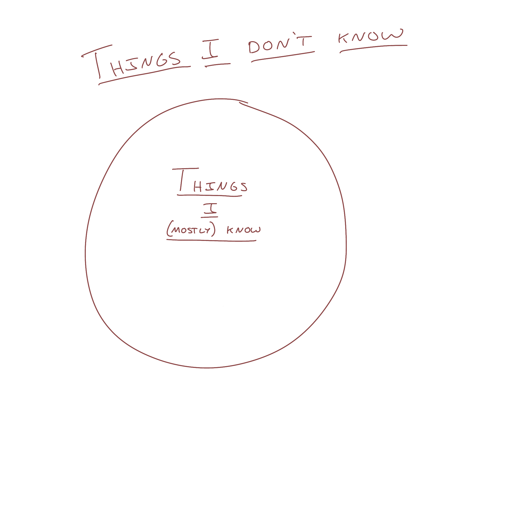
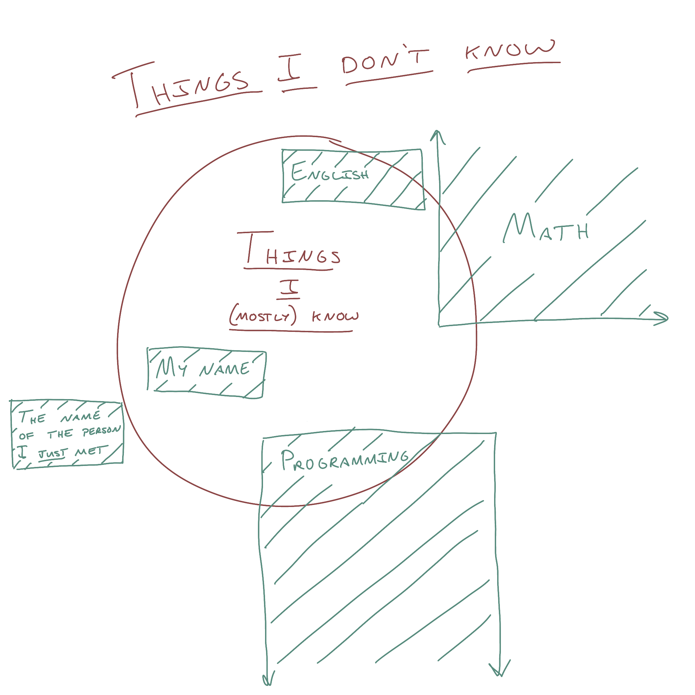
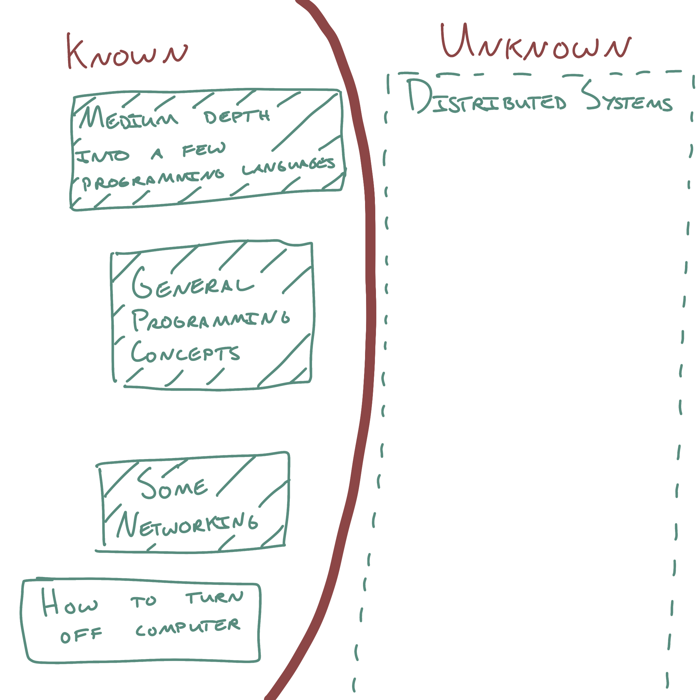
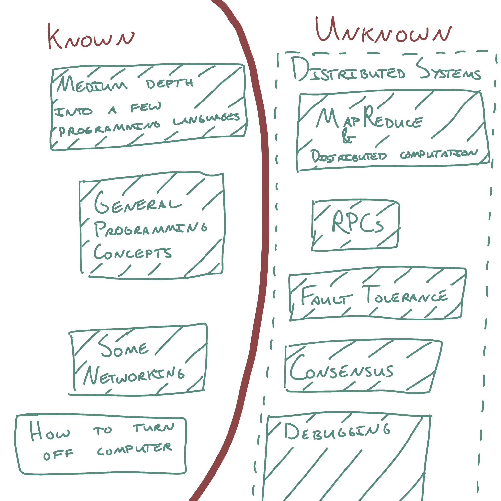
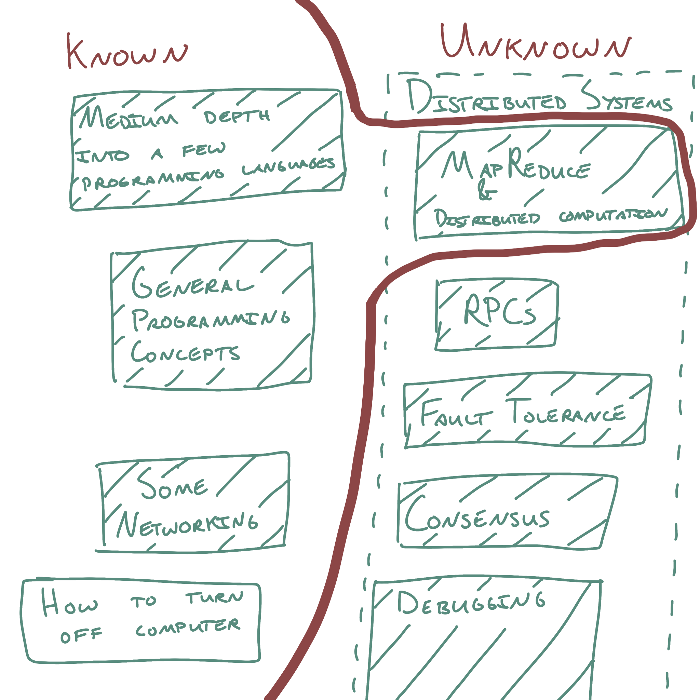
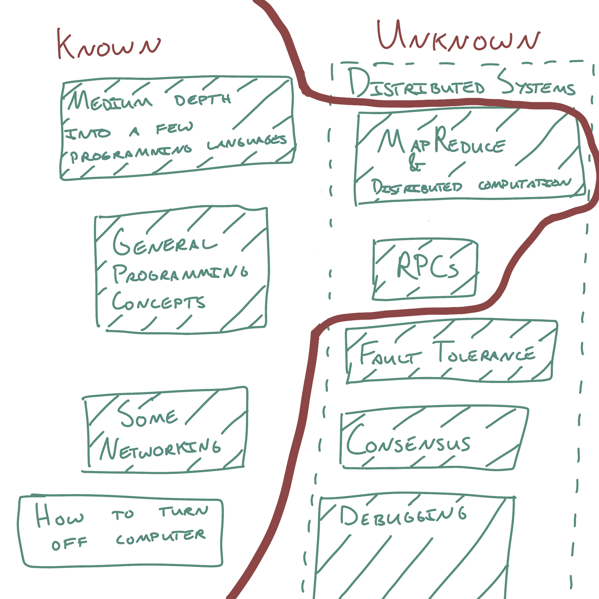
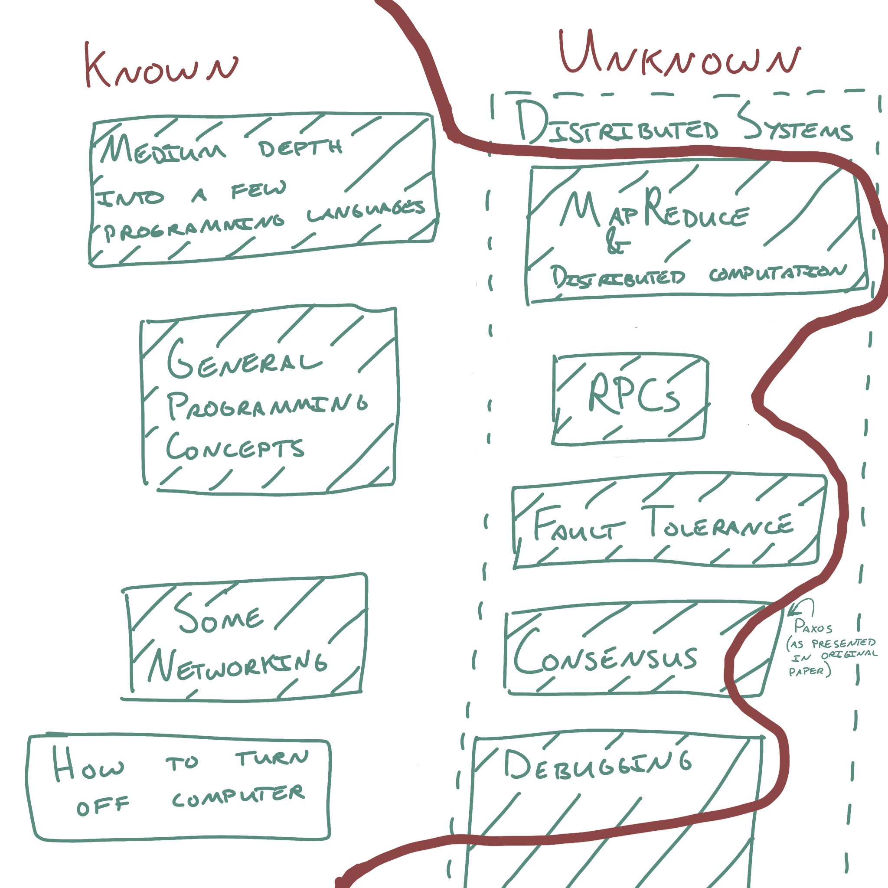

Learning by working on problems just outside of your reach
Oct 2, 2022 · 1112 words · 6 minutes read
There’s a common pattern I’ve seen when learning something new, where you can effectively move towards a larger goal by working on problems just outside of your reach. I did a little thinking about what that would look like and how to find the right steps to take.
Circles of knowledge: what I do and do not know
Let’s say you have some general knowledge in some areas. I sometimes think about knowledge and “things you know and understand” as some sort of multidimensional blob that can grow, contract, and connect in many different ways as you learn and practice. For the sake of easy visualization, we can think of it as a circle of knowledge, dividing everything into two categories: things you know and things you don’t know.

My knowledge is a weird mix of things I’ve picked up over the last few decades. There are some things I know well, like the names of all 50 states in alphabetical order (thanks to the song), but there are many things that only partially fall within my circle with much of their depth unknown to me.

There are so many things I don’t know, and there are frequently things that I want to learn. Maybe it’s something relatively small, like a new JS web API I’m curious about, but maybe it’s something big and amorphous, like “distributed systems”. If we think about this boundary, where the rubber of the new thing meets the road of what I already know, we can imagine that it’s just outside this circle.
Let’s take distributed systems, for example, where I may have already known some parts of a few languages, some general programming concepts, and some networking concepts. Staring me in the face is this intimidating box, “distributed systems”.

In reality, this broad “distributed systems” is made up of many things, including concepts around distributed computation, RPCs, fault tolerance, consensus, debugging, and many things off the screen to the bottom.

You don’t learn the big box at once. You work your way towards the goal, slowly expanding your new beachhead of knowledge by working problems always just outside of your reach. Much like the race to the edge of human knowledge in the illustrated guide to a Ph.D., it’s like continuously adding a single additional piece of unknown as you take steps towards the goal. Maybe you start with MapReduce to learn more about distributed computation and ideas around splitting up work.

Suddenly, your pretty circle of knowledge has a blemish where you’ve expanded out into the unknown. The border of the known has shifted a little, and picking off RPCs grows it even further:

Bumpy! You’ve picked up a few more things, the bumpy surface of your understanding now including a few more things, and you’re slowly building towards that broader goal. What you learn builds off of what you’ve already learned, and you grow your knowledge by picking off concepts and ideas.1

And just like that, suddenly you’ve got pretty good coverage across this broad area. Of course, it isn’t a slowly expanding circle, and these things rarely are fully in your circle of knowledge. It’s some sort of amorphous blob of connections, strengthened understanding, and jutting things you don’t know. Everything relates to everything else, especially in programming, and everything is so complex.
The concepts above are also pretty interchangeable in their order, but that’s not always the case for working your way through. As an exercise left to the reader, think about what this would look like for learning a foreign language, ramping up a new engineer on a code base, or learning a new programming language.
Working on problems just outside of reach
One of the most helpful things about this is that it gives more immediate and appropriately scoped goals; as a junior engineer new to a codebase, I shouldn’t be trying to learn the whole codebase in one go, but instead I should learn parts of it by fixing bugs and adding features with the scope increasing as I understand more and more. Someone new to programming shouldn’t be setting out to “learn programming”, but should instead start with small programs, like printing the sum of the first ten integers, then spend the next ten years working on more complicated projects. I find it also helps to give a guided path towards these goals, especially if you’re able to start your first steps with fundamentals that later steps will build off of, much like you probably spent a lot of time doing basic arithmetic before learning algebra.
How do you find those right steps to take? This is where guidance from a third party can be tremendously helpful, as appropriate scoping for steps can really help with your movement towards the eventual goal.2 Books are nice, as they frequently give a path and steps for you to follow. Better yet is if you have someone that knows the path well and is able to guide you along it, crafting those steps for your current knowledge and checking to see where you are. This is where classes are great, as they (hopefully) offer a nice balance between a well-trod path through a subject and a helping hand from the professor and/or TAs to guide you through it.
It’s one of the things I really enjoy about mentorship, where you can help create these paths and guide people along them. It’s one of the things I most enjoyed about my previous life working as a tutor, long before I got into tech. It was a game of figuring out where the student’s understanding was and what the best way to get them to the next step would be. It would be a constant game of empathy and translation, both seeing where they were and exploring the best way to map the subject material to something that they would understand and be able to explore themselves. This is where I think the personal touch really matters, as the single path presented in the textbook may not be the one that makes the most sense to your brain and where your current understanding is.
It’s a very tricky problem, but it’s a wonderful one to solve.
-
Outside the scope of this section is the best way to learn new things. I’d recommend a mix of reading, building, experimentation, and talking to smart people. It’s really up to you to discover what works best for yourself! ↩︎
-
Of course, you can always figure it out by yourself as you go. I’d recommend at least some guidance from someone with experience on the path, since it can be so hard without knowing what you don’t know. ↩︎